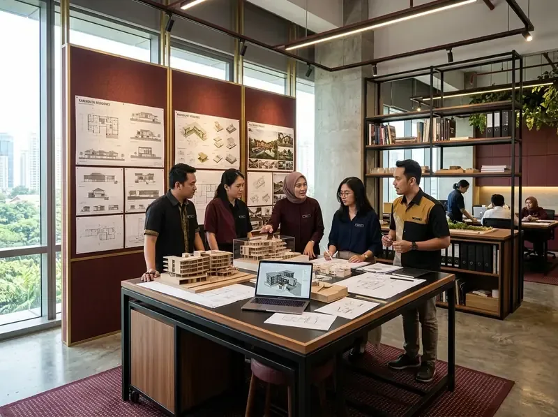

Jasa Arsitek
Layanan perencanaan arsitektur profesional: denah 2D, desain 3D, gambar kerja lengkap, RAB, hingga koordinasi pembangunan.
SelengkapnyaMelayani jasa arsitektur, bangun rumah mewah, renovasi, hingga desain interior dengan standar kualitas tinggi, tepat waktu, dan transparan di Indonesia.


Maroon Arsitek adalah perusahaan jasa arsitek dan kontraktor profesional yang berdedikasi menghadirkan solusi dari desain hingga pembangunan. Melayani Jakarta dan berbagai wilayah di Indonesia dengan pendekatan yang detail, terencana, dan berorientasi pada kepuasan klien.
Setiap proyek dikerjakan dengan standar tinggi, timeline jelas, dan komunikasi yang transparan dari awal hingga akhir.
Mulai KonsultasiSetiap desain dibuat berdasarkan kebutuhan, gaya hidup, dan anggaran klien — bukan template generik.
Material dipilih dengan cermat, pengerjaan diawasi langsung oleh tim, dengan quality control di setiap tahap.
Setiap proyek memiliki jadwal yang realistis dan kami berkomitmen menyelesaikan tepat waktu.
Update progres proyek secara berkala. Anda selalu tahu perkembangan terbaru tanpa harus bertanya-tanya.
Alur kerja yang terstruktur memastikan setiap proyek berjalan lancar dari konsultasi awal hingga serah terima.
Diskusikan kebutuhan, visi, dan anggaran proyek Anda
Penyusunan konsep desain yang sesuai kebutuhan
Pengembangan desain 2D, 3D, dan gambar teknis lengkap
Rencana Anggaran Biaya yang transparan dan terperinci
Pembangunan dengan pengawasan penuh dan berkala
Quality control akhir dan serah terima proyek
Dari desain hingga pembangunan, kami hadir di setiap tahap perjalanan mewujudkan bangunan impian Anda.
Layanan perencanaan arsitektur profesional: denah 2D, desain 3D, gambar kerja lengkap, RAB, hingga koordinasi pembangunan.
SelengkapnyaPembangunan rumah dari nol dengan pengawasan ketat, material berkualitas, dan tim berpengalaman di bidang konstruksi hunian.
SelengkapnyaKonstruksi bangunan komersial: ruko, kantor, kafe, restoran, villa, dan gedung usaha dengan standar konstruksi profesional.
SelengkapnyaRenovasi rumah lama, renovasi fasad, perluasan bangunan, hingga renovasi total gedung komersial dengan perencanaan matang.
SelengkapnyaDesain interior rumah, apartemen, kantor, dan ruang komersial — dari layout, material, lighting, hingga custom furniture.
SelengkapnyaDiskusikan kebutuhan proyek Anda bersama tim ahli kami. Survey lokasi, estimasi awal, dan konsultasi desain tanpa biaya komitmen.
Mulai KonsultasiKepuasan dan kepercayaan klien adalah bukti komitmen kami dalam menghadirkan karya arsitektur dan konstruksi terbaik.
Berbagai proyek arsitektur, konstruksi rumah, bangunan komersial, dan renovasi yang telah kami selesaikan.


Masih ada pertanyaan? Hubungi kami langsung melalui WhatsApp.
Tanya LangsungKonsultasikan kebutuhan proyek Anda dengan tim Maroon Arsitek. Kirimkan ukuran lahan, luas bangunan, dan kebutuhan ruang untuk mendapatkan estimasi awal secara gratis.